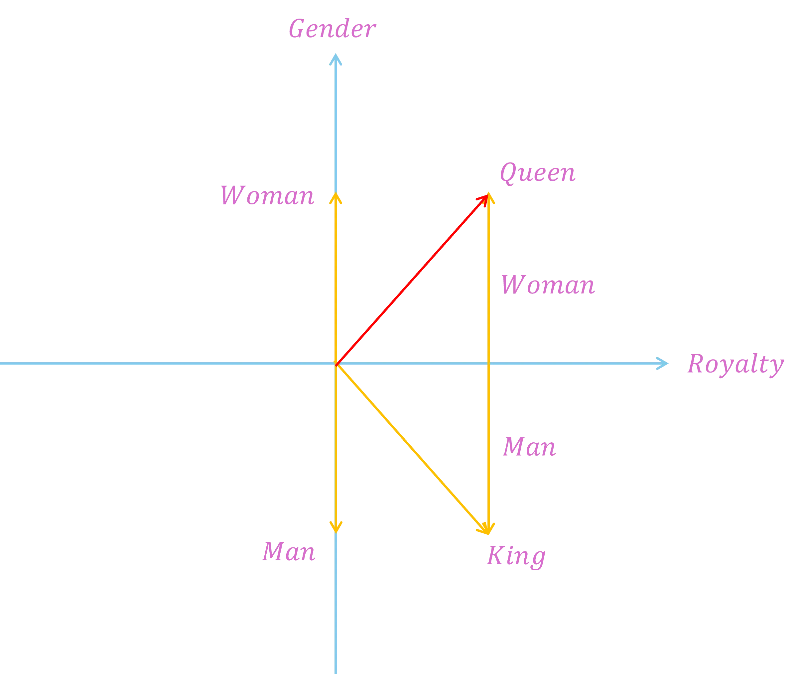
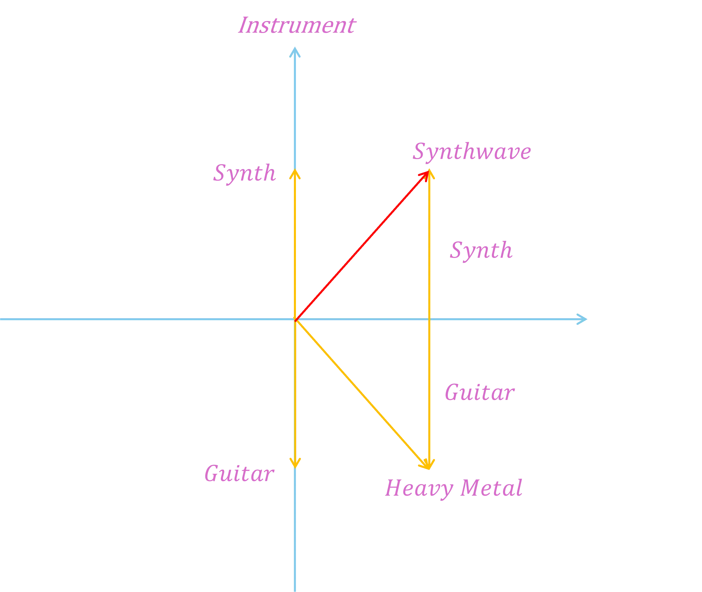

Have you ever wondered how computers understand human language or how an AI is suddenly capable of composing its own songs?
To a computer, words, notes, or audio samples don't initially exist as feelings or meanings. To a machine, they are pure data. It doesn't inherently know that "dog" and "puppy" mean almost the same thing, or that a distorted electric guitar fits heavy metal better than smooth jazz.
This is where embeddings (vector embeddings) come into play. They are the invisible foundation of modern Artificial Intelligence.
The Core Idea: The Dictionary in Space
Imagine a giant, invisible coordinate system, like a massive 3D map, but with hundreds of dimensions. An embedding is basically nothing more than an address (a string of numbers) assigned to a word or object within this space.
The special thing about it: Things with a similar meaning land in the same neighborhood.
An embedding model learns the meaning of a word through the context in which it appears:
“You shall know a word by the company it keeps.”
When the AI reads millions of times that people "drink coffee," "drink tea," and "drink juice," it understands: Coffee, tea, and juice must be related somehow. They are assigned similar numerical values (addresses) in the coordinate system. "Dog" and "puppy" lie close together, while the word "refrigerator" is miles away.
Julia explains embeddings
The Math Miracle: Doing Math with Words
Because embeddings consist of pure numbers, the computer can suddenly do math with concepts. A famous example from AI research perfectly demonstrates how the system understands genuine relationships:
But how does this work in practice? In reality, an AI uses hundreds of dimensions, but let's simplify it down to just two dimensions to see the math in action:
- The X-Axis (Royalty): Values from -1 (completely commoner) to +1 (fully royal).
- The Y-Axis (Gender): Values from -1 (masculine) to +1 (feminine).
Based on these characteristics, the AI assigns coordinates (vectors) to the words:
- King = [0.9, -0.9] (highly royal, highly masculine)
- Man = [0.0, -1.0] (not royal, maximum masculine)
- Woman = [0.0, +1.0] (not royal, maximum feminine)
- Queen = [0.9, +0.9] (highly royal, highly feminine)

Latent Space of Words
Now, let's calculate the formula step-by-step by subtracting and adding the individual X and Y coordinates:
-
Step A (King minus Man): We strip the "masculine" concept away from the King, leaving only the pure concept of royalty.
- X (Royalty): 0.9 - 0.0 = 0.9
- Y (Gender): -0.9 - (-1.0) = -0.9 + 1.0 = 0.1
- Intermediate Result: [0.9, 0.1] (A concept that is highly royal, but gender-neutral).
-
Step B (Plus Woman): Now, we add the "feminine" concept to our gender-neutral royal concept.
- X (Royalty): 0.9 + 0.0 = 0.9
- Y (Gender): 0.1 + 1.0 = 1.1
Our final mathematical result is the coordinate [0.9, 1.1].
The AI looks at its giant map to see which word is closest to this new address. It checks the coordinate for Queen ([0.9, +0.9]), sees a near-perfect match, and instantly knows: The result of this equation is Queen.
The Leap into Music – The Infinite Sound Space
What works with words also works with tones. As a musician, you have an instinctive feel for the "space" in which music moves. You know which chords fit together or what kind of synth sound creates a melancholy vibe.
Music AIs use embeddings to rebuild exactly this space mathematically.
Every sample, every chord, every vocal line, and every lyric gets its fixed place on a gigantic sonic map:
- A 909 kick sample and an 808 sub-bass lie very close to each other in this space.
- An acoustic guitar lies in a completely different neighborhood.
- Sad lyrics in English land close to sad lyrics in German, far away from a happy party track.
Mixing on a Mathematical Console
Just like with words, the AI can now calculate with music styles and moods. This works like filtering or combining signals on a mixing console, but on the level of concepts:

Latent Space of Music
If the model takes the mathematical address of heavy metal, subtracts the guitars, and adds synthesizers, it automatically lands on genres like synthwave in the coordinate system.
Why Is This Important for You as a Musician?
Embeddings are the invisible engine behind the tools we use today in the studio, during songwriting, or for streaming:
- Smart Sample Search: Looking for a sample that sounds "warm, dusty, and jazzy"? Embeddings translate these words into the sonic space and find the exact audio files that sound that way, even if they are named something completely different.
- AI Co-Writing & Generation: Tools like Suno, Udio, or intelligent plugins in your DAW use embeddings to understand which transition or melody makes the most stylistic sense next.
- Streaming Algorithms: Spotify and co. use embeddings to connect your song with tracks that have a similar "sonic DNA" in order to place you on the right playlists for the right listeners.
Embeddings are not trying to replace musicians. They are a highly sophisticated translation tool. They translate the magic, structures, and emotions of music into the language of mathematics, allowing AI to support us as a powerful tool in the creative process.